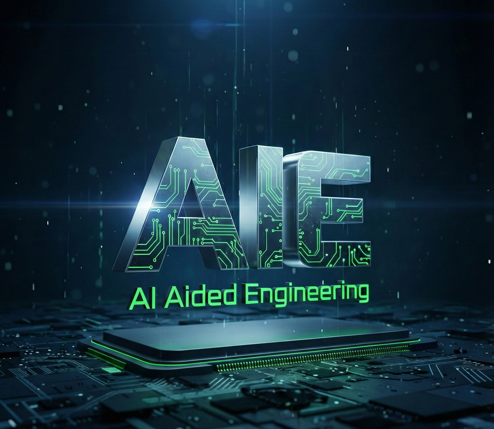

2025 Year in Review: Building the Future of Engineering
How the AI-Aided Engineering initiative advanced neural operators, geometry-aware learning, open source, and scientific machine learning in 2025.

Note
Update, August 2026: The initiative described in this review is now the AI-Aided Engineering research group at NVIDIA Research. I am proud to lead the group as we continue this work.
In 2025, progress in AI for physical systems made it increasingly practical to use learned models inside engineering and scientific workflows.
My main focus was AI-Aided Engineering (AIE): developing learning methods that complement simulation and help engineers predict, explore, optimize, and design. This review highlights what we built, published, released, and shared during the year.
Launching the AIE Initiative
In 2025, we launched the AI-Aided Engineering initiative at NVIDIA Research.
High-fidelity numerical simulation is central to modern engineering, but a single analysis can require days or weeks of computation. This limits how many designs, operating conditions, and hypotheses engineers can explore. AIE studies learning methods that complement numerical simulation with faster prediction, uncertainty quantification, optimization, and inverse design.
Neural operators are central to this effort because they learn mappings between functions and physical fields rather than mappings tied to a single discretization. In suitable applications, they can accelerate repeated simulation and design workloads by four to five orders of magnitude. The exact gain depends on the physical system, resolution, numerical baseline, and accuracy target. Our Nature Reviews Physics article provides a broader review of the framework, evidence, and limitations.
This evolution from computer-aided engineering to AI-Aided Engineering reflects years of collaborative work. I am especially grateful to Nikola Kovachki and Daniel Leibovici, and to Jan Kautz for his support and advice.
What We Worked On
Our 2025 research agenda focused on barriers that prevent learned models from becoming reliable engineering tools: complex geometry, generalization beyond training configurations, resolution changes, memory requirements, and uncertainty.
Three papers reflect that mission:
- FourCastNet 3: A geometric approach to probabilistic machine-learning weather forecasting at scale develops a geometric approach to stable probabilistic medium-range weather forecasting.
- Factorized Implicit Global Convolution for Automotive Computational Fluid Dynamics Prediction introduces a method for predicting fluid dynamics across complex automotive geometries.
- Principled Approaches for Extending Neural Architectures to Function Spaces for Operator Learning studies how neural architectures can be extended to function spaces so that their behavior remains consistent across discretizations and resolutions.
We also advanced tensor methods for scalable learning:
- Analyzing Political Text at Scale with Online Tensor LDA, published in Political Analysis, provides a provable approach to topic recovery with linear scaling to very large document collections.
- TensorGRaD: Tensor Gradient Robust Decomposition for Memory-Efficient Neural Operator Training applies robust tensor decomposition to optimizer states, substantially reducing memory requirements without reducing accuracy in the reported experiments.
You can find the full publication list on my publications page or Google Scholar.
Community & Open Source
Open source is foundational to modern AI and essential to making new methods broadly accessible. I created and continue to lead open-source projects that make tensor methods and neural operators easier to use, extend, and apply.
One highlight of 2025 was seeing NeuralOperator officially join the PyTorch Ecosystem. NeuralOperator provides models, data processing, training utilities, and examples for operator learning within the familiar PyTorch ecosystem.
Open research also depends on the volunteers who sustain conferences and journals. In 2025, I served on the NeurIPS organizing committee as Communications Chair, as an Area Chair for ICML, and as an Action Editor for TMLR.
These roles and open-source projects require substantial work, often outside normal hours, but contributing alongside a dedicated community makes that effort worthwhile.
Talks & Conversations
Because we want researchers to use these methods in their own applications, conversations with scientific and engineering communities are an important part of the work. Some personal highlights were:
- The Royal Swedish Academy of Sciences AI for Science Symposium: an invited keynote in Stockholm on neural operators for scientific discovery and engineering simulation.
- PyTorch Conference 2025 Keynote: a conversation with the PyTorch community in San Francisco about the software foundations needed for physics machine learning, TensorLy, and NeuralOperator.
- Institute of Physics, Physics-Enhanced Machine Learning: a discussion of real-world applications of physics-enhanced machine learning.
- AI for Science Symposium: a gathering hosted by Foundry in San Francisco that brought together researchers, funders, and infrastructure providers.
- University of Chicago seminar on AI and Scientific Discovery: a discussion of discovery workflows and the role of AI in scientific research.
- VOILA! online seminar: a presentation on neural operators as a framework for scalable scientific computing, hosted by Université Côte d'Azur.
- TRICAP 2025 in Ålesund, Norway: an invited talk on tensor decompositions and their growing role in modern AI.
- SLAC National Accelerator Laboratory seminar: a discussion of infrastructure for large-scale scientific data.
- UW-Madison Distinguished Seminar Series: a presentation on the next generation of neural operators.
Looking Ahead to 2026
As 2026 began, I was excited to turn the AIE vision into a sustained research program.
The goal was to develop reliable learning methods for demanding engineering problems, from aerodynamics and extreme weather prediction to materials and inverse design.
Question
What problem would you like to see AIE tackle?
The future of engineering will be increasingly interactive, and I look forward to sharing our progress.